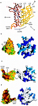
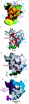
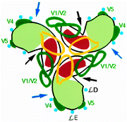

Abstract
The human immunodeficiency virus HIV-1 establishes persistent infections in humans which lead to acquired immunodeficiency syndrome (AIDS). The HIV-1 envelope glycoproteins, gp120 and gp41, are assembled into a trimeric complex that mediates virus entry into target cells1. HIV-1 entry depends on the sequential interaction of the gp120 exterior envelope glycoprotein with the receptors on the cell, CD4 and members of the chemokine receptor family2, 3, 4. The gp120 glycoprotein, which can be shed from the envelope complex, elicits both virus-neutralizing and non-neutralizing antibodies during natural infection. Antibodies that lack neutralizing activity are often directed against the gp120 regions that are occluded on the assembled trimer and which are exposed only upon shedding5,6. Neutralizing antibodies, by contrast, must access the functional envelope glycoprotein complex7 and typically recognize conserved or variable epitopes near the receptor-binding regions8, 9, 10, 11. Here we describe the spatial organization of conserved neutralization epitopes on gp120, using epitope maps in conjunction with the X-ray crystal structure of a ternary complex that includes a gp120 core, CD4 and a neutralizing antibody12. A large fraction of the predicted accessible surface of gp120 in the trimer is composed of variable, heavily glycosylated core and loop structures that surround the receptor-binding regions. Understanding the structural basis for the ability of HIV-1 to evade the humoral immune response should assist in the design of a vaccine.
The amino-acid sequence of human and simian immunodeficiency virus gp120 glycoproteins consists of five variable regions (V1–V5) interposed among more conserved regions13. Variable regions V1–V4 form exposed loops anchored at their bases by disulphide bonds14.
Neutralizing antibodies recognize both variable and conserved gp120 structures. The V2 and V3 loops contain epitopes for strain-restricted neutralizing antibodies15, 16, 17. More broadly neutralizing antibodies recognize discontinuous, conserved epitopes in three regions of the gp120 glycoprotein (Table 1). In HIV-1-infected humans, the most abundant of these are directed against the CD4-binding site (CD4BS) and block gp120–CD4 interaction8,9. Less common are antibodies against epitopes induced or exposed upon CD4 binding (CD4i)18. Both CD4i and V3 antibodies disrupt the binding of gp120–CD4 complexes to chemokine receptors10,11. A third gp120 neutralization epitope is defined by a unique monoclonal antibody, 2G12 (ref. 19), which does not efficiently block receptor binding11.

In the accompanying Article12, we report the X-ray crystal structure of an HIV-1 gp120 core in a ternary complex with two-domain soluble CD4 and the Fab fragment of the CD4i antibody 17b. The gp120 core lacks the V1/V2 and V3 variable loops, as well as amino- and carboxy-terminal sequences, which interact with the gp41 glycoprotein6, and is enzymatically deglycosylated12,20. Despite these modifications, the gp120 core binds CD4 and antibodies against CD4BS and CD4i epitopes20,21 and thus retains structural integrity. The gp120 core is composed of an inner domain, an outer domain and a third element, the 'bridging sheet'12 (Fig. 1a). All three structural elements contribute, either directly or indirectly, to CD4 and chemokine-receptor binding12. We now analyse the organization of the surface of the gp120 core in light of the known antibody responses directed against this exposed viral glycoprotein.
Figure 1: Structure and orientation of the HIV-1 gp120 core.
a, A C tracing of the gp120 core, which was crystallized in a ternary complex with two-domain soluble CD4 and the Fab fragment of the 17b antibody12, is shown. The gp120 core is seen from the perspective of CD4, and is oriented with the viral membrane at the top of the figure and the target cell membrane at the bottom. The inner gp120 domain is shown in red and the outer domain in yellow; the 'bridging sheet' is orange. The N and C termini of the truncated gp120 core are labelled, as are the positions of structures related to the gp120 variable regions V1–V5. The A, C, D and E surface loops12 are shown. The position of the Phe 43 cavity involved in CD4 binding is indicated by an asterisk. The gp120 surface implicated in binding to the CCR5 chemokine receptor (C. Rizzuto and J.G.S., submitted) is shown. The perspectives shown in b–d are indicated. b, View of the molecular surface of the gp120 outer domain, from the perspective indicated in a. The molecular surface on the left is coloured according to the variability observed in gp120 residues among primate immunodeficiency viruses: red, residues conserved among all primate immunodeficiency viruses; orange, residues conserved in all HIV-1 isolates; yellow, residues exhibiting some variation among HIV-1 isolates; and green, residues showing significant variability among HIV-1 isolates (see Methods). The variability of the gp120 surface is underestimated here because the V4 variable loop, which is not resolved in the structure, contributes to this surface (approximate location is indicated). The position of the V5 region is shown. Also note the highly conserved glycosylation site (Asn 356 and Thr/Ser 358) within the E loop, between the V5 and V4 regions. On the right, the V4 loop and the carbohydrates are modelled (see Methods). The complex carbohydrate addition sites used in mammalian cells14 are coloured light blue, and the high-mannose sites are dark blue. The gp120 protein surface is in white. c, View of the gp120 molecular surface that faces the target cell. Variability is indicated on the left, using the same colour scheme as in b. Note the clear demarcation between the conserved surface, which has been implicated in the formation of CD4i epitopes18 and in chemokine-receptor binding (C. Rizzuto and J.G.S., submitted), and the variable surface of the outer domain. The recessed binding site for CD4 is indicated, flanked by the V1/V2 stem, which is labelled. The V4 loop and the carbohydrates are modelled on the right (colouring as in b). Particular carbohydrates referred to in the text are labelled. d, View of the molecular surface of the gp120 core inner domain. Variability is indicated on the left by the colour scheme used in b. The CD4-binding site is on the right; the protruding V1/V2 stem is indicated. The conserved molecular surface, which is associated with the inner domain of the gp120 core, is devoid of known N-linked glycosylation sites. These are modelled on the right, which is coloured as in b.
tracing of the gp120 core, which was crystallized in a ternary complex with two-domain soluble CD4 and the Fab fragment of the 17b antibody12, is shown. The gp120 core is seen from the perspective of CD4, and is oriented with the viral membrane at the top of the figure and the target cell membrane at the bottom. The inner gp120 domain is shown in red and the outer domain in yellow; the 'bridging sheet' is orange. The N and C termini of the truncated gp120 core are labelled, as are the positions of structures related to the gp120 variable regions V1–V5. The A, C, D and E surface loops12 are shown. The position of the Phe 43 cavity involved in CD4 binding is indicated by an asterisk. The gp120 surface implicated in binding to the CCR5 chemokine receptor (C. Rizzuto and J.G.S., submitted) is shown. The perspectives shown in b–d are indicated. b, View of the molecular surface of the gp120 outer domain, from the perspective indicated in a. The molecular surface on the left is coloured according to the variability observed in gp120 residues among primate immunodeficiency viruses: red, residues conserved among all primate immunodeficiency viruses; orange, residues conserved in all HIV-1 isolates; yellow, residues exhibiting some variation among HIV-1 isolates; and green, residues showing significant variability among HIV-1 isolates (see Methods). The variability of the gp120 surface is underestimated here because the V4 variable loop, which is not resolved in the structure, contributes to this surface (approximate location is indicated). The position of the V5 region is shown. Also note the highly conserved glycosylation site (Asn 356 and Thr/Ser 358) within the E loop, between the V5 and V4 regions. On the right, the V4 loop and the carbohydrates are modelled (see Methods). The complex carbohydrate addition sites used in mammalian cells14 are coloured light blue, and the high-mannose sites are dark blue. The gp120 protein surface is in white. c, View of the gp120 molecular surface that faces the target cell. Variability is indicated on the left, using the same colour scheme as in b. Note the clear demarcation between the conserved surface, which has been implicated in the formation of CD4i epitopes18 and in chemokine-receptor binding (C. Rizzuto and J.G.S., submitted), and the variable surface of the outer domain. The recessed binding site for CD4 is indicated, flanked by the V1/V2 stem, which is labelled. The V4 loop and the carbohydrates are modelled on the right (colouring as in b). Particular carbohydrates referred to in the text are labelled. d, View of the molecular surface of the gp120 core inner domain. Variability is indicated on the left by the colour scheme used in b. The CD4-binding site is on the right; the protruding V1/V2 stem is indicated. The conserved molecular surface, which is associated with the inner domain of the gp120 core, is devoid of known N-linked glycosylation sites. These are modelled on the right, which is coloured as in b.
Although generally well conserved compared with the five variable regions, some variability in the surface of the gp120 core is evident when the sequences of all primate immunodeficiency viruses are analysed. This variability is disproportionately associated with the surface of the outer domain proximal to the V4 and V5 regions and removed from the receptor-binding regions (Fig. 1a–c). The A, C, D and E surface loops12 contribute to the variability of this surface. The potential N-linked glycosylation sites present in the gp120 core are concentrated in this variable half of the protein (Fig. 1b, c). The only conserved residues apparent on this relatively variable surface are asparagine 356 and threonine/serine 358, which constitute a complex carbohydrate addition site within the E loop (Fig. 1b, c). As most carbohydrate moieties may appear as 'self' to the immune system, the extensive glycosylation of the outer domain surface may render it less visibleto immune surveillance. This helps to explain why antibodies directed against this gp120 surface have been identified so infrequently.
The receptor-binding regions retained in the gp120 core are well conserved among primate immunodeficiency viruses12. Also highly conserved is the surface of the inner domain spanned by the 1 helixand located opposite the variable surface described above (Fig.1d). This surface is likely to interact with gp41 and/or with N-terminal gp120 segments absent from the gp120 core. This inner domain surface and the receptor-binding regions are devoid of glycosylation.
In conjunction with prior mutagenic and antibody competition analyses5,6,18, 19, 20,22 the gp120 core structure reveals the spatial positioning of the conserved gp120 neutralization epitopes. Although the principal variable loops are either absent (V1/V2 and V3) or poorly resolved (V4) in the gp120 core structure, their approximate positions can be deduced (Fig.2a). The conserved gp120 neutralization epitopes are discussed in relation to these variable loops and the variable, glycosylated core surface.
Figure 2: The spatial relationship of epitopes on the HIV-1 gp120 glycoprotein.
a, The molecular surface of the gp120 core is shown, using the same perspective as in Fig. 1a. The modelled N-terminal gp120 core residues, V4 loop and carbohydrate structures are included. The variability of the molecular surface is indicated (colour scheme as in Fig. 1b). The modelled carbohydrates are shown in light blue (complex sugars) or dark blue (high-mannose sugars). The approximate locations of the V2 and V3 variable loops are indicated. Note the well-conserved surfaces near the 'Phe 43' cavity and the chemokine-receptor-binding site (Fig. 1a). b, C tracing of the gp120 core, oriented as in Fig. 1a. The gp120 residues within 4 Å of the 17b CD4i antibody are shown in green; those implicated in the binding of CD4BS antibodies22 are in red. Changes in these residues significantly affect the binding of at least 25% of the CD4BS antibodies listed in Table 1. The residues implicated in 2G12 binding19 are shown in blue. The V4 variable loop, which contributes to the 2G12 epitope19, is indicated by dotted lines. c, The molecular surface of the gp120 core, oriented and coloured as in b. d, Approximate locations of the faces of the gp120 core, defined by the interaction of gp120 and antibodies. The molecular surface accessible to neutralizing ligands (CD4 and CD4BS, CD4i and 2G12 antibodies) is shown in white. The neutralizing face of the complete gp120 glycoprotein includes the V2 and V3 loops, which are found adjacent to the surface shown (a). The approximate location of the gp120 face that is poorly accessible on the assembled envelope glycoprotein trimer and therefore elicits only non-neutralizing antibodies5,6 is shown in magenta. The approximate location of an immunologically 'silent' face of gp120, which roughly corresponds to the highly glycosylated outer domain surface, is in blue.
CD4i epitopes. The gp120 epitope recognized by the CD4i antibody 17b can be directly visualized in the crystallized ternary complex12 (Fig. 2b, c). Strands from the gp120 fourth conserved (C4) region and the V1/V2 stem contribute to an antiparallel  -sheet (the 'bridging sheet'; Fig. 1a) that contacts the antibody. Most gp120 residues previously implicated in the formation of the CD4i epitopes18 (Table 1) are located either within this -sheet or in nearby structures. With the exception of Thr 202 and Met 434, the gp120 residues in contact with the 17b Fab are highly conserved among HIV-1 isolates (Figs 1c, 2a). The prominent ('male') CDR3 loop of the 17b heavy chain dominates the contacts with gp120, with additional contacts through the heavy chain CDR2 (ref. 12). Unusually, there are minimal 17b light-chain contacts, leaving a large gap between the gp120 core and most of the 17b light-chain surface. In the complete gp120 glycoprotein, this gap is probably occupied by the V3 loop. This is consistent with the position and orientation of the V3 base on the gp120 core structure12, the effect of V3 deletions on the binding of CD4i antibodies in the absence of soluble CD4 (ref. 21), the competition of some V3-directed antibodies with CD4i antibodies5, and the ability of both antibody groups to block chemokine-receptor binding10,11. The chemokine-receptor-binding region of gp120 probably consists of elements near or within the 'bridging sheet' and the V3 loop (Fig. 1a), a model that is supported by recent mutagenic analysis (C. Rizzuto et al., submitted).
-sheet (the 'bridging sheet'; Fig. 1a) that contacts the antibody. Most gp120 residues previously implicated in the formation of the CD4i epitopes18 (Table 1) are located either within this -sheet or in nearby structures. With the exception of Thr 202 and Met 434, the gp120 residues in contact with the 17b Fab are highly conserved among HIV-1 isolates (Figs 1c, 2a). The prominent ('male') CDR3 loop of the 17b heavy chain dominates the contacts with gp120, with additional contacts through the heavy chain CDR2 (ref. 12). Unusually, there are minimal 17b light-chain contacts, leaving a large gap between the gp120 core and most of the 17b light-chain surface. In the complete gp120 glycoprotein, this gap is probably occupied by the V3 loop. This is consistent with the position and orientation of the V3 base on the gp120 core structure12, the effect of V3 deletions on the binding of CD4i antibodies in the absence of soluble CD4 (ref. 21), the competition of some V3-directed antibodies with CD4i antibodies5, and the ability of both antibody groups to block chemokine-receptor binding10,11. The chemokine-receptor-binding region of gp120 probably consists of elements near or within the 'bridging sheet' and the V3 loop (Fig. 1a), a model that is supported by recent mutagenic analysis (C. Rizzuto et al., submitted).
The V2 loop probably resides on the side of the 17b epitope opposite the V3 loop (Fig. 2a). The V1/V2 loops, which vary from 57 to 86 residues in length13, are dispensable for HIV-1 replication21,23, but decrease the sensitivity of viruses to neutralization by antibodies against V3 and CD4i epitopes23. The latter effect is mediated primarily by the V2 loop21, suggesting that part of the V2 loop folds back along the V1/V2 stem to mask the 'bridging sheet' and adjacent V3 loop. The proximity of the V2 and V3 loops is supported by the observation that, in monkeys infected with simian–human immunodeficiency viruses (SHIVs), neutralizing antibodies are raised against discontinuous epitopes with V2 and V3 components (B. Etemad-Moghadam et al., submitted). The CD4i epitopes are probably masked by the flanking V2 and V3 loops, requiring the evolution of antibodies with protruding ('male') complementarity-determining regions (CDRs) to access these conserved epitopes. It has been suggested that CD4 binding repositions the V1/V2 loops, thus exposing the CD4i epitopes21. The presence of contacts between the V1/V2 stem and CD4 in the crystal structure12 is consistent with this model.
CD4BS epitopes. CD4 makes several contacts within a recessed pocket on the gp120 surface. The gp120–CD4 interface includes two cavities, one water-filled and bounded equally by both proteins, the other extending into the gp120 interior and contacting CD4 only at Phe 43 (Fig. 1a)12. Table 1and Fig. 2b, c show the gp120 residues implicated in the formation of CD4BS epitopes recognized by eight representative antibodies. CD4BS epitopes are uniformly disrupted by changes in Asp 368 and Glu 370 (ref. 22), which surround the opening of the 'Phe 43 cavity'. These residues are located on a ridge at the intersection of the two receptor-binding gp120 surfaces, consistent with competition studies suggesting that CD4BS epitopes overlap both the CD4i epitopes and the binding site for CD4 (refs 5, 18). The location of the gp120 residues implicated in formation of the CD4BS epitopes suggests that important elements of the CD4-binding surface of gp120 are accessible to antibodies.
Some CD4BS antibodies, like IgG1b12, are particularly potent at neutralizing HIV-1 (ref. 24). IgG1b12 binding is disrupted by gp120 changes that affect the binding of other CD4BS antibodies but, atypically, is sensitive to changes in the V1/V2 stem–loop structure25. The observation that some well-conserved residues in the gp120 V1/V2 stem contact CD4 (ref. 12) raises the possibility that this protruding structure also contributes to the IgG1b12 epitope. This might increase the ability of the antibody to access the assembled envelope glycoprotein trimer, thus increasing neutralizing capability.
Although the CD4BS epitopes and the CD4-binding site overlap, several observations demonstrate that the binding of CD4BS antibodies differs from that of CD4. Changes in Trp 427, a gp120 residue that contacts both the Phe 43 cavity and CD4, uniformly disrupt CD4 binding but affect the binding of only some CD4BS antibodies (Table 1). Conversely, some changes in other cavity-lining gp120 residues, Ser 256 and Thr 257, affect the binding of CD4BS antibodies more than the binding of CD4 (ref. 22). As the recessed position of Ser 256 and Thr 257 in the current crystal structure (Fig.2b, c) makes direct contacts with antibody unlikely, either the effects of changes in these residues are indirect or the CD4BS antibodies recognize a gp120 conformation that differs from the CD4-bound state. With respect to the latter possibility, it is interesting that several of the residues implicated in the integrity of the CD4BS epitopes are located in the interface between the inner and outer gp120 domains. CD4BS antibodies might recognize a gp120 conformation in which the spatial relationship between the domains is altered compared with the CD4-bound state, thus allowing better surface exposure of these residues. Differences between the CD4BS epitopes and the CD4-binding site create opportunities for neutralization escape22. The gp120 residues surrounding the Phe 43 cavity are highly conserved among primate immunodeficiency viruses (Fig. 2a), but the observed modest variation in adjacent surface-accessible residues (for example, Pro 369, Thr 373 and Lys 432) could account for decreased recognition of the gp120 glycoprotein from some geographic clades of HIV-1 by CD4BS antibodies25. Additional potential for variation near or within the CD4BS epitopes is created by the unusual water-filled cavity in the gp120–CD4 binding interface, because CD4 binding can apparently tolerate change in the gp120 residues contacting this cavity12.
The recessed nature of the CD4-binding pocket on gp120 (Fig.1c) may delay the generation of high-affinity antibodies against the CD4BS epitopes and may afford opportunities to minimize the antiviral efficacy of such antibodies once they are elicited. The degree of recession is probably much greater on the full-length glycosylated gp120 than is evident on the crystallized gp120 core. The recessed pocket is flanked on one side by the V1/V2 stem–loop structure. The characterization of HIV-1 escape mutants from the IgG1b12 CD4BS antibody and the mapping of several V2 conformational epitopes support a model in which the V2 loop folds back along the V1/V2 stem, with V2 residues 183–188 proximal to Asp 368 and Glu 370. This model is consistent with observations that V1/V2 changes, in combination with V3 changes, can alter the exposure of the adjacent CD4BS epitopes, particularly on the assembled trimer26. The high temperature factors associated with the V1/V2 stem12 imply flexibility in this protruding element (Fig.1c, d), expanding the potential range of space occupied by the V1/V2 stem–loop structure. This could increase masking of the adjacent CD4BS and CD4i gp120 epitopes and divert antibody responses towards the variable loops.
Glycosylation may modify the interaction of antibodies with CD4BS epitopes. The D loop, on the rim of the CD4-binding pocket opposite the V1/V2 stem, contains a well-conserved glycosylation site, Asn 276 (Fig. 1c). Changes in this site and at the adjacent Ala 281 have been associated with escape from the neutralizing activity of patient sera27 and have been seen in SHIVs extensively passaged in monkeys28. Another conserved glycosylation site at Asn 386 lies adjacent to both CD4BS and CD4i epitopes (Fig.1c) and could diminish antibody responses against those sites. Additionally, in various HIV-1 strains, carbohydrates are added to the V2 loop segment (residues 186–188) thought to be proximal to the CD4BS epitopes.
The 2G12 epitope. The integrity of the 2G12 epitope is disrupted by changes in gp120 glycosylation, by either glycosidase treatment or mutagenic alteration of specific N-linked carbohydrate-addition sites19. These sites are located on the relatively variable surface of the gp120 outer domain, opposite to and approximately 25 Å away from the CD4-binding site (Fig. 2b, c). The gp120 glycoprotein synthesized in mammalian cells exhibits a dense concentration of high-mannose sugars in this region (Fig. 2a). Even in the enzymatically deglycosylated gp120 core, carbohydrate residues constitute much of this surface. 2G12 probably binds at least in part to these carbohydrates, explaining the surprising conservation of the 2G12 epitope despite the variability of the underlying protein surface, which includes the stem of the V3 loop and the V4 variable region. The inclusion of carbohydrate in the epitope might also explain the apparent rarity with which these antibodies are generated. The localization of the 2G12 epitope is consistent with previous studies indicating that 2G12 forms a unique competition group5,19 and does not interfere with the binding of monomeric gp120 to either CD4 or chemokine receptors11. As the 2G12 epitope is predicted to be oriented towards the target cell upon CD4 binding (see below), the antibody may sterically impair interactions of the oligomeric envelope glycoprotein complex with host cell moieties.
Possible orientations of the exterior glycoproteins in the trimer are significantly constrained by the requirement that observed and deduced binding sites for receptors and neutralizing antibodies, sites of N-linked glycosylation, and variable structures be exposed on the surface of the assembled complex. The two-domain CD4 in the ternary complex structure was aligned to the structure of four-domain CD4 (ref. 29) to orient the trimer model with respect to the target cell membrane. The predictions of such a model (Fig. 3) are: (1) the chemokine-receptor-binding sites are clustered at the vertex of the trimer predicted to be closest to the target cell; (2) both variable and conserved neutralization epitopes are concentrated on the half of gp120 facing the target cell; (3) possibilities for intersubunit interactions among the variable structures that could help mask conserved neutralization epitopes are created; (4) the subset of gp120 glycosylation sites to which complex carbohydrates are added in mammalian cells14 is well exposed on the outer periphery of the trimer; (5) the highly conserved surface near the 1 helix is available for gp41 and/or gp120 protein interactions within the trimers; and (6) the surface of the assembled envelope glycoprotein complex is roughly hemispherical, minimizing the surface area of the viral spike that is potentially exposed to antibodies.
Figure 3: A likely arrangement of the HIV-1 gp120 glycoproteins in a trimeric complex.
The gp120 core was organized into a trimeric array, based on the criteria discussed in the text. The perspective is from the target-cell membrane, like that in Fig. 1c. The CD4-binding pockets are indicated by black arrows, and the conserved chemokine-receptor-binding regions are in red. Areas shaded in light green indicate the more variable, glycosylated surfaces of the gp120 cores. The approximate locations of the 2G12 epitopes are indicated by blue arrows; those of the V3 loops (yellow) and V4 regions (green) are indicated. The positions of the V5 regions (green) and some complex-carbohydrate addition sites (asparagines 276, 463, 356, 397 and 406) (blue dots) are shown. The approximate locations of the large V1/V2 loops, centred on the known positions of the V1/V2 stems, are indicated (green). On one of the gp120 subunits, the positions of the D and E loops are indicated. The distance of each of the gp120 monomers from the 3-fold symmetry axis is arbitrary.
High resolution image and legend (179K)In summary, the X-ray crystal structure of the gp120 core/two-domain CD4/17b Fab complex provides a framework for visualizing important interactions between HIV-1 and the humoral immune system. Previous antibody competition analyses indicated that the gp120 surface buried in the assembled trimer elicits non-neutralizing antibodies5,6. By contrast, the binding sites for neutralizing antibodies cluster on a different gp120 surface5. Our structural studies support the existence of non-neutralizing and neutralizing faces of gp120, and reveal another, immunologically 'silent' face of the glycoprotein (Fig. 2d). This outer domain surface, together with the principal variable loops, contributes to the large fraction of the gp120 surface that is protected against antibody responses by a dense array of carbohydrates and by the capacity for variation. The conserved receptor-binding regions of gp120 represent attractive targets for immune intervention. However, the elicitation of antibodies against these conformation-dependent structures is inefficient. As the gp120 epitopes near the receptor-binding regions span the inner and outer domains, interdomain conformational shifts may decrease their representation in the immunogen pool. The recessed nature of the CD4-binding site probably contributes to its poor immunogenicity. The sequential recognition of two receptors by primate immunodeficiency viruses allows the conserved elements of the chemokine-receptor-binding site to be created or exposed only after CD4 binding has occurred. At that point, it is likely that the proximity of the chemokine-receptor-binding site to the cell membrane sterically limits antibody binding. The evolution of primate immunodeficiency viruses that persist successfully, despite the host immune response, presents a challenge to vaccine development. An understanding of the structures of the relevant gp120 epitopes should assist efforts to overcome these hurdles.
Methods
Graphics. Molecular graphics were produced using Midas-Plus (University of California, San Francisco) and GRASP30.
Assignment of variability. Variability in gp120 residues was assessed using an alignment of sequences derived from  400 HIV-1, HIV-2 and simian immunodeficiency viruses13. Residues were assigned variability indices and colour coded as follows: red, conserved in all primate immunodeficiency viruses; orange, conserved in all HIV-1, including groups M and O and chimpanzee isolates; yellow, some variation among HIV-1 isolates (divergence from the consensus sequence in 1–8 of the 12 HIV-1 groups examined); green, variable among HIV-1 isolates (divergence from the consensus sequence in 9 of the 12 HIV-1 groups examined).
400 HIV-1, HIV-2 and simian immunodeficiency viruses13. Residues were assigned variability indices and colour coded as follows: red, conserved in all primate immunodeficiency viruses; orange, conserved in all HIV-1, including groups M and O and chimpanzee isolates; yellow, some variation among HIV-1 isolates (divergence from the consensus sequence in 1–8 of the 12 HIV-1 groups examined); green, variable among HIV-1 isolates (divergence from the consensus sequence in 9 of the 12 HIV-1 groups examined).
Molecular modelling. Residues 88, 89 and 397–409, which are disordered in the ternary complex crystals12, were built manually using the program TOM. For the V4 loop (residues 397–409), a dominant constraint was the distance between the ordered residues 396 and 410 (C–C distance of 26.88 Å). For the carbohydrate, examination of the N-linked carbohydrate in several crystal structures (for example, 1fc2, 1gly, 1lte) showed that the core common to both high-mannose and complex N-linked sugars, (NAG)2(MAN)3, did not differ greatly in conformation after alignment of the first NAG (N-acetylglucosamine) (MAN, mannose). This core, which represents roughly half the total glycosylation for a typical N-linked site, was built onto each of the 18 consensus N-linked glycosylation sites found on the HXBc2 gp120 core. The stereochemistry of this initial model was refined using simulated annealing in XPLOR. Briefly, the model was heated to temperatures of between 2,500 and 3,500 K, and slow cooled in steps of 25 to 300 K. At each step, molecular dynamics were performed with the core gp120 fixed, allowing only the modelled residues and carbohydrate (including any attached Asn) to move. In three separate runs, performing molecular dynamics for 5 fs per step, all steric clashes could be removed and the geometry idealized, with an average root-mean-square (r.m.s.) of carbohydrate movement of only 3.5 Å. Four subsequent runs were made using dynamic times of between 50–75 fs per step. The carbohydrate positions obtained from these runs differed substantially from those in the starting model (average carbohydrate r.m.s. difference of 8 Å). Two of the models from these longer annealings were more similar to each other than to the rest (r.m.s. differences in carbohydrate of 4 Å versus 8 Å for all other models): one had been heated to 3,500 K, with dynamics of 75 fs per step; the other (see figures) was heated to only 2,500 K, with dynamics of 50 fs per step. In general, the r.m.s. movement of the NAG sugars was roughly half the r.m.s. movement of the MAN sugars, reflecting greater conformational flexibility away from the protein surface.